Fun with
Flow Models
Editing photographs with a pretrained model, then learning to generate handwritten digits from noise.
- Input
- Noise, images, prompts
- Method
- Flow matching
- Output
- Edits, illusions, digits
Overview
This project goes from editing photos to training a digit generator. Part A uses PixNerd for denoising, text-guided edits, and illusions. Part B is a smaller model I built and trained myself. The idea behind both is to predict how an image should change, then keep applying those updates.
Time runs from zero (noise) to one (data). Part A uses RGB images normalized to ; Part B uses grayscale MNIST digits in .
Part A · Exploring a pretrained flow model
From a Photograph to Noise
The parrot is my test photo for the first five exercises, cropped and resized with the supplied code. Every version uses the same noise pattern, so you can compare what happens as more of the photo comes through.
A.1.1 · Constructing noisy inputs
This mixes the photo with Gaussian noise. At time zero, you get just noise; at time one, you get the original photo. I checked both endpoints, then generated the three mixtures below.
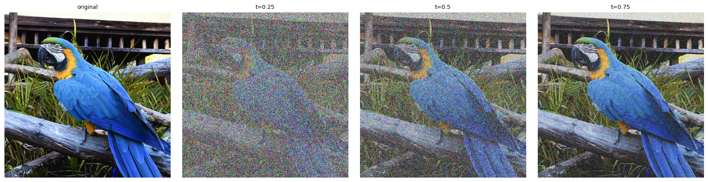
A.1.2 · Gaussian blur as a baseline
Gaussian blur is the first baseline. Dividing the input by its time restores the photo's intensity scale, but amplifies the noise too. Of blur strengths 1, 2, 4, 8, and 16, I kept the lowest-MSE result. You can see the drawback at 0.25: much of the feather and grass detail disappears along with the noise.
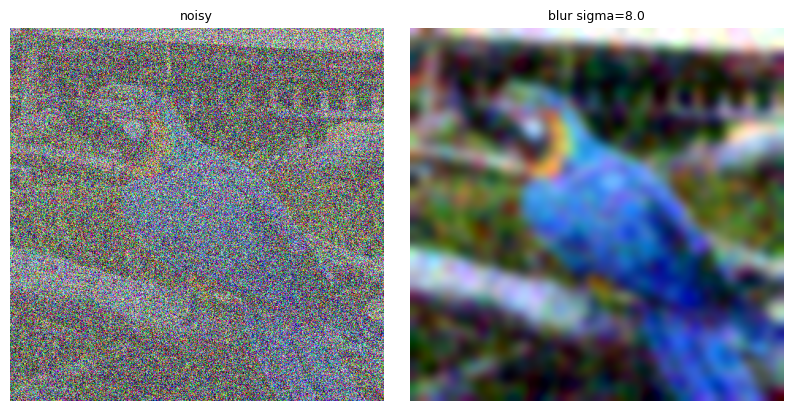
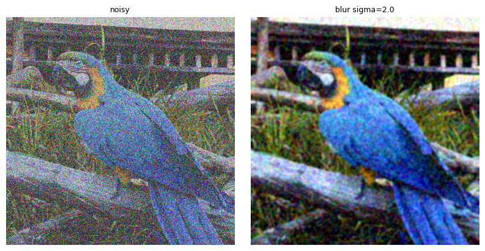
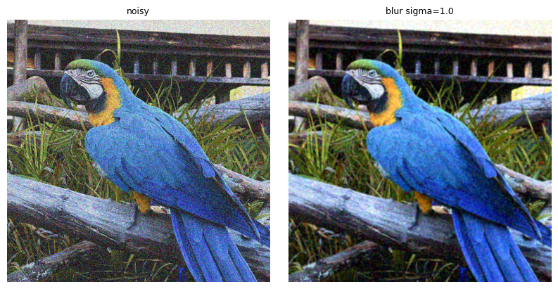
A.1.3 · One-step model denoising
PixNerd does much better with the prompt “a high quality photo.” Its velocity prediction, multiplied by the remaining time, gives an update to add to the noisy image. Just one prediction removes most of the noise, though the feathers look a little smooth.
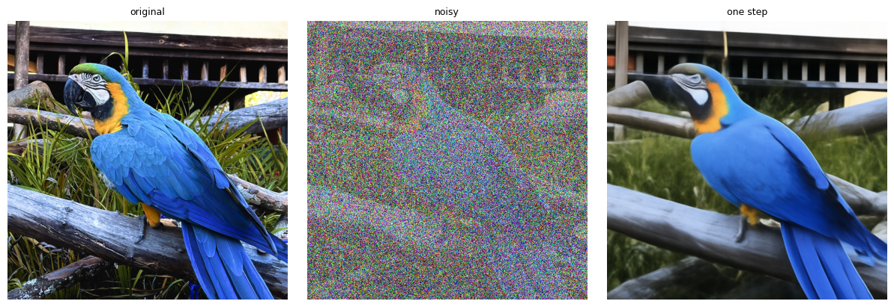
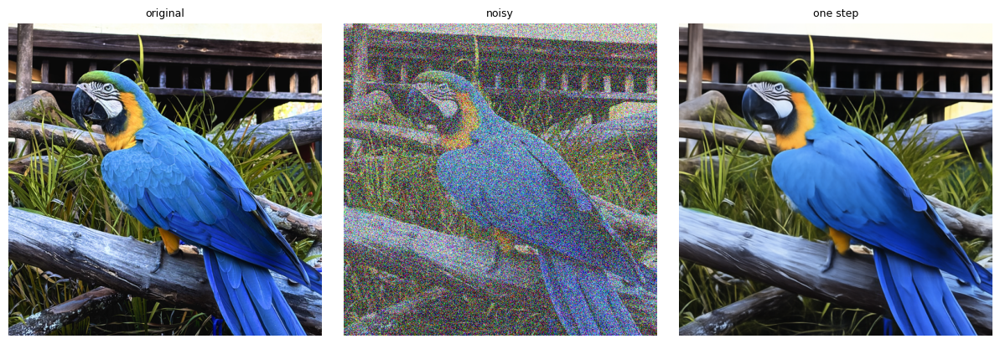
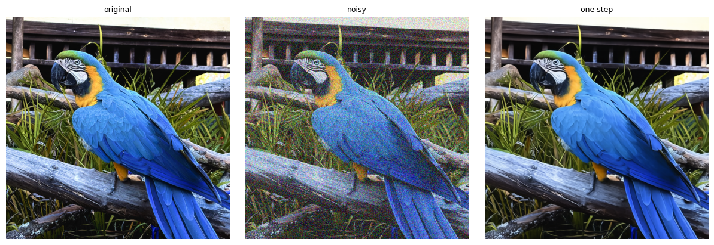
Velocity Predictions and Error Maps
Because the original photo and noise are saved, there's an exact update to compare against. Their difference gives the ground-truth velocity; multiplying by the remaining time gives the update needed to recover the photo. Below, that's compared with PixNerd's prediction using the same photo prompt.
Each error pixel is the RMS difference across RGB, calculated before clipping or display scaling. The updates share a symmetric scale with zero at middle gray. The error maps also share linear color limits, so a bright region means the same amount of error in every row.
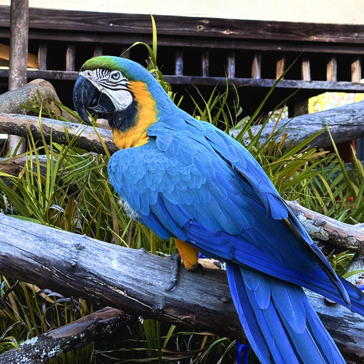
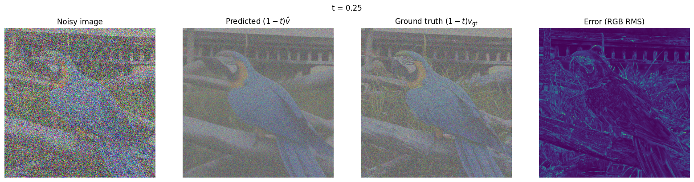
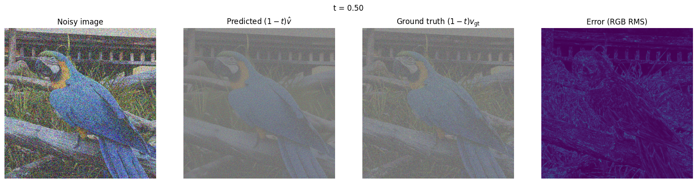
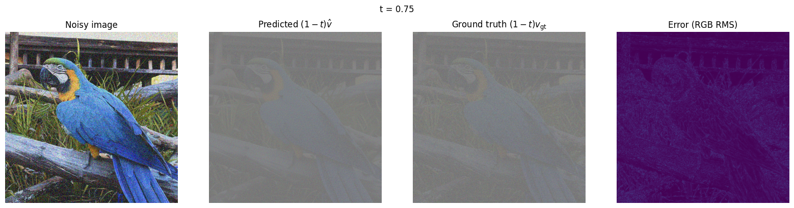
Iterative Denoising with Euler Sampling
Instead of making one big update, Euler sampling takes a small step, predicts a new velocity, and repeats. I used steps of 0.02, shortening the last one when needed to finish exactly at time one.
Starting from the saved time-0.50 input takes 25 updates. Below are the initial image, every fifth update, and the result. The supplied constant-velocity tests checked the step counts and shortened final step.
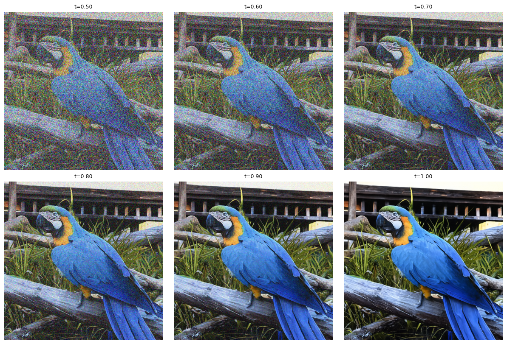
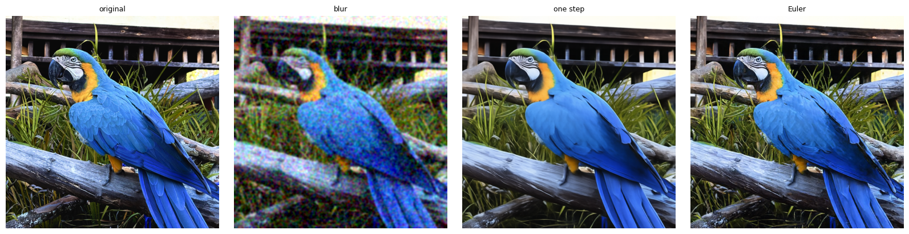
Text-to-Image Generation and CFG
I then started from pure noise, using seeds 180–184 and “a high quality photo.” All five results were portraits, even though I never asked for people. The quality varied quite a bit. The first one is missing most of its face!

A.2.1 · Classifier-free guidance
CFG gives the prompt more influence by comparing two predictions: one with the photo prompt and one with an empty prompt, both at the same image and time. Their weighted difference is added to the conditional prediction. I used weight seven; setting it to zero correctly returns the ordinary conditional result.

The faces look much better with guidance, but all five are still portraits. I reused the same seeds for this comparison. That fixes the starting noise, although changing the velocity can still produce a different person.
Image-to-Image Editing
Editing starts with a photo mixed with noise, then samples back to time one. The starting time makes a big difference: lower times allow bigger changes, while higher times keep more of the input. These examples use only the generic photo prompt, with no description of the subject.
Settings: “a high quality photo” · CFG weight 7 · Euler step 0.02 · starting times 0.02, 0.04, 0.06, 0.10, 0.14, 0.25, 0.50. Each panel begins with the original, followed by these seven edits in reading order.
Campanile and two personal test images

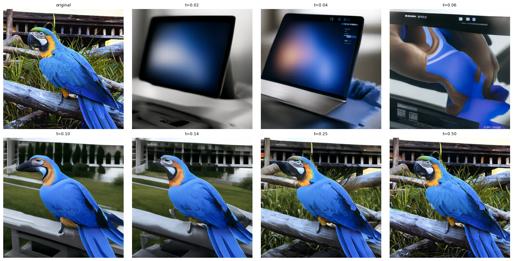
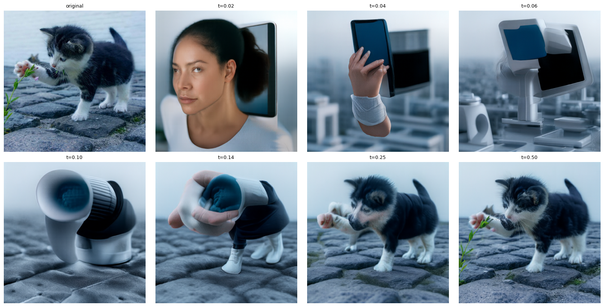
A web image and two drawings
The same process also works on illustrations and drawings, with some odd results. Below are a downloaded wolf illustration, my chess pawn, and my abstract face drawing. At the lowest times, the pawn turns into a person!
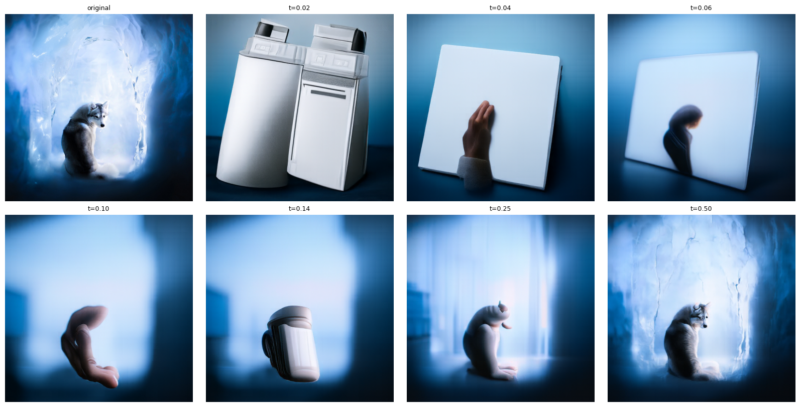
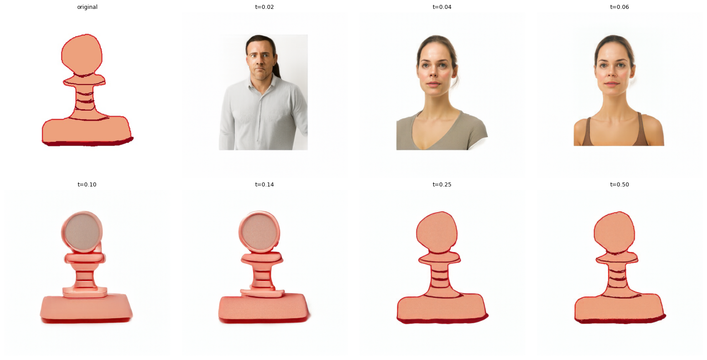
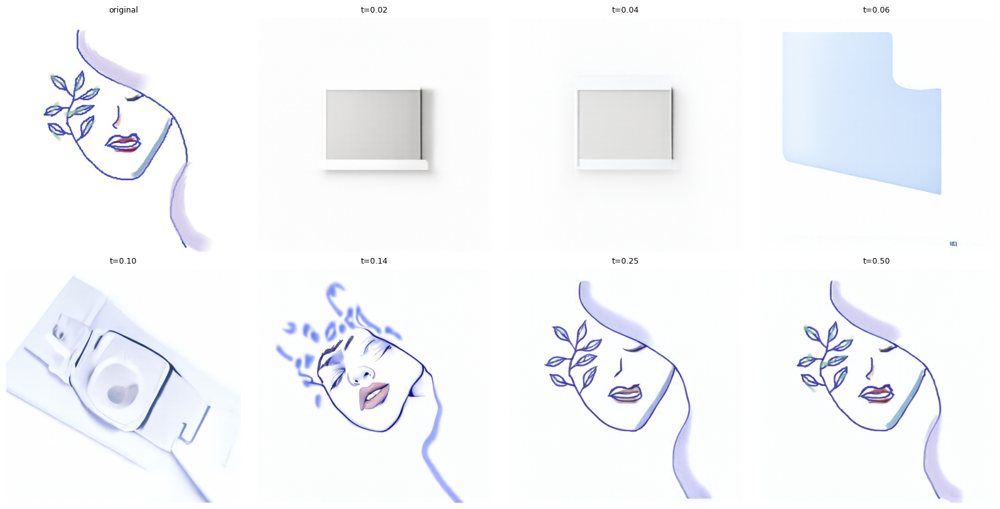
Text-Guided Image Editing
A specific prompt gives these edits a clearer direction. The seven starting times are unchanged. Watch how the new description takes over at low times, while the original photo pushes back at higher ones.
Campanile → rocket
Prompt: “a photograph of a rocket on a launch pad”
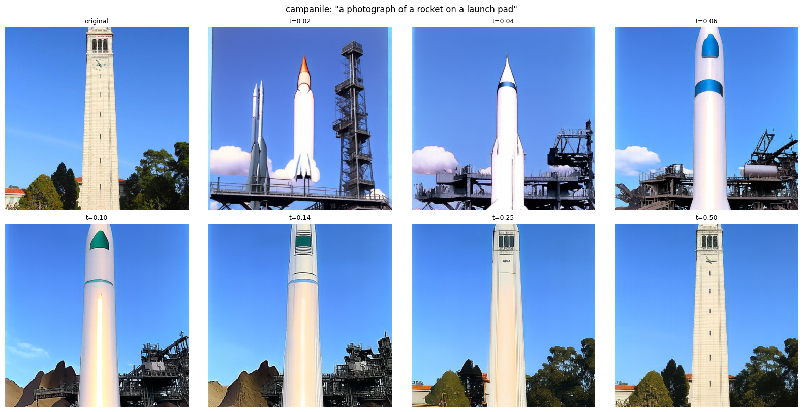
Parrot → glass sculpture
Prompt: “a photograph of a vivid glass sculpture of a parrot”
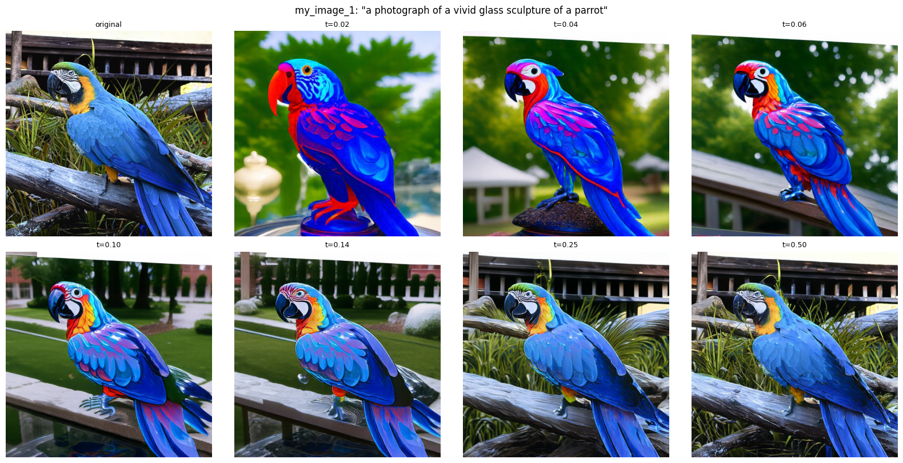
Cat → tiger and lava
Prompt: “a photograph of a bengal tiger touching a source of lava with its paw”
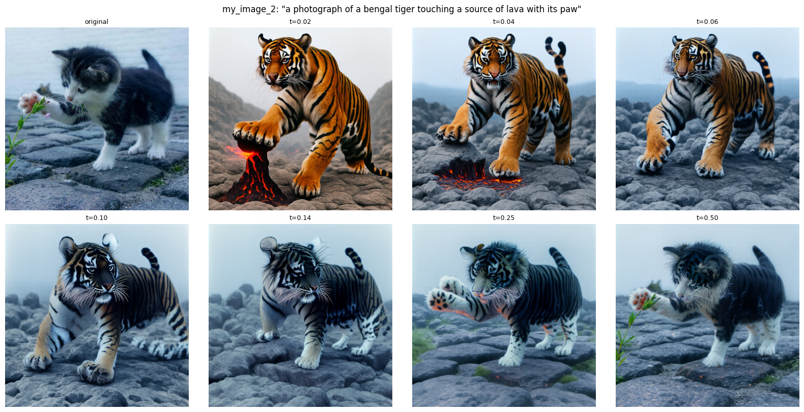
Visual Anagrams: Rotate to Reveal
These images show a different subject when you turn them upside down. At each Euler step, I predict guided velocities for the upright and rotated image using different prompts. I rotate the second prediction back and average them, so both updates refer to the same pixels.
Here rotates both spatial axes by 180°, so applying it twice restores the original. Both examples use guidance weight 7 and step size 0.02, with seeds 180 and 181.


Hybrid Images: Near and Far
These hybrids use the same frequency split as Project 2, applied during sampling. One prompt supplies low-frequency structure, the other high-frequency detail. At each step, Gaussian blur gives the first velocity's low-pass part, and subtracting the second velocity's blur gives its high-pass part.
Both predictions use the same state and time, with CFG weight 7. I used the supplied Gaussian filter with , then added the two bands for the Euler update.
Waterfall up close, skull from a distance
Low-frequency prompt: “a lithograph of a skull”
High-frequency prompt: “a lithograph of a waterfall”

Forest up close, cat from a distance
Low-frequency prompt: “a lithograph of a cat”
High-frequency prompt: “a lithograph of a forest”

Try looking up close, then from a few meters away, or compare the small versions. The cat's ears and outline come through more clearly than its facial features.
Part B · Flow matching from scratch
Building a Digit Denoiser
Part B starts with a UNet built from the supplied architecture. The feature maps shrink, then expand back to the input size. Skip connections carry earlier features into the matching decoder levels, helping the network keep track of the digit's strokes.
The blocks use batch normalization and GELU. A average pool forms the bottleneck, and transposed convolutions expand the features. The last convolution returns one grayscale channel, without clipping it during training.
B.1.2 · Adding noise
The same digit gets progressively noisier below, using one noise pattern at seven strengths. This time, the clean image keeps its full intensity while scaled Gaussian noise is added.
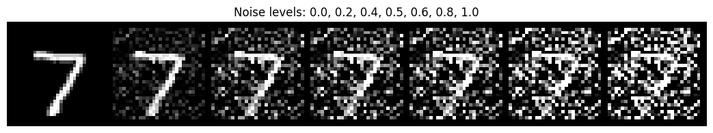
B.1.2.1 · Training at a fixed noise level
The UNet gets a noisy digit and tries to predict the clean one. Training uses shuffled MNIST images for five epochs, fresh noise in every batch, and MSE to measure pixel errors. The examples below are held-out test digits, so the model hasn't trained on them.
Settings: hidden dimension 128 · batch size 256 · Adam learning rate 0.0001 · noise standard deviation 0.5 · five epochs.
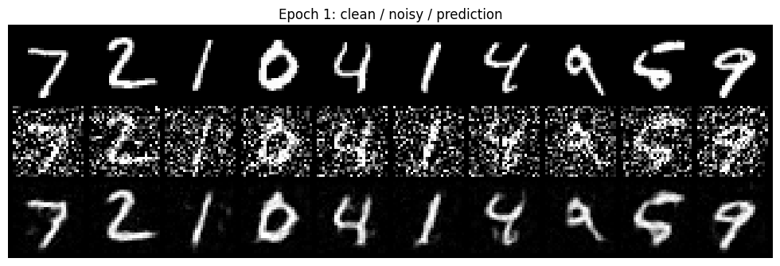
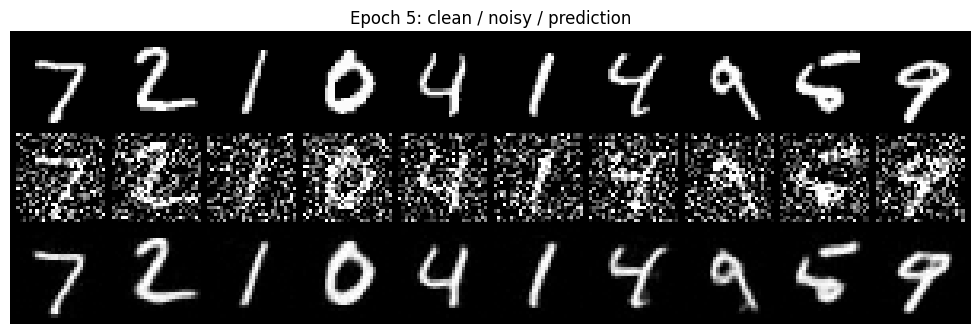
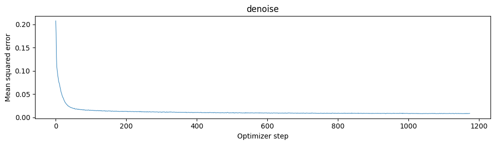
Testing Different Noise Levels
The model only trained at 0.5, so I tested how it handles other noise levels. Each column uses the same digit and noise pattern. Nearby levels work fairly well; at 0.8 and 1.0, you can see extra strokes and noise creeping back in.
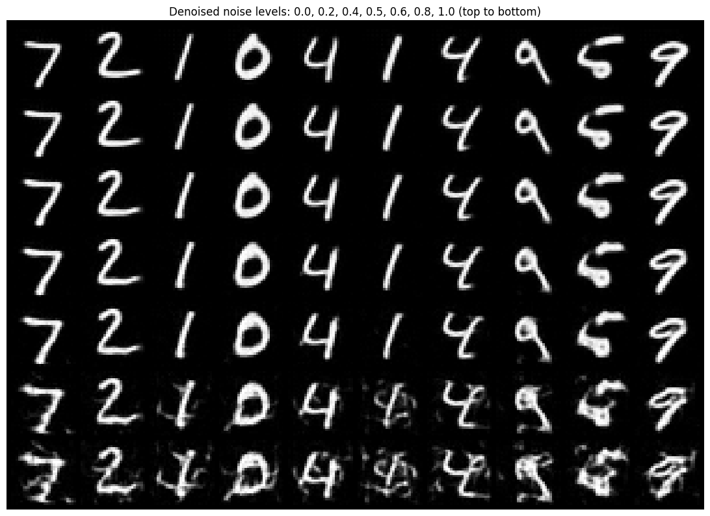
Why Pure-Noise Denoising Averages
A fresh UNet gets the same training settings, but its input is now pure noise. The target is still a clean digit. With no clue which digit it's supposed to produce, almost every sample ends up as the same blurry blob.
That's what MSE encourages here. When input and target are independent, predicting the mean target minimizes the expected error. Averaging MNIST digits overlaps their loops and strokes into this central shape. The loss can improve even though the samples never become distinct digits.
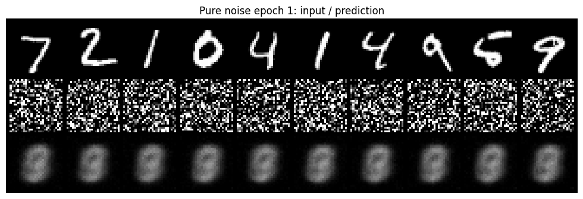
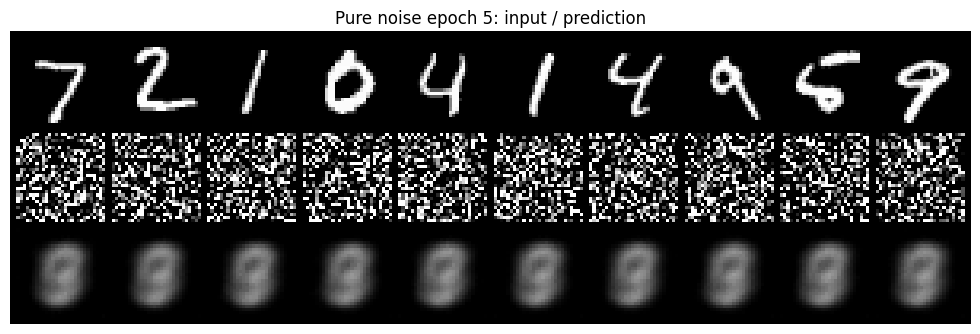
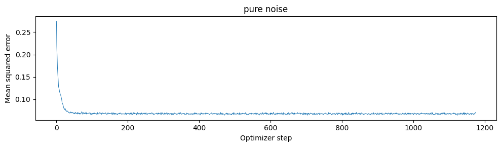
Learning a Time-Conditioned Flow
Flow matching gives the network a different task: predict velocity. Each training digit is mixed with Gaussian noise at a random time, sampled uniformly between zero and one. The target is the digit minus the noise, and the time tells the network how much of each it's seeing.
Two fully connected blocks turn time into channel weights, using linear → GELU → linear. The weights multiply features after unflattening and after the first upsampling block. MSE now compares predicted and target velocities.
Training: hidden dimension 64 · batch size 64 · ten epochs · Adam initial learning rate 0.01 · exponential decay factor after each epoch.
Sampling: 40 independent noise inputs · 50 Euler steps · seed 180 for each checkpoint comparison.
Sampling starts from Gaussian noise and takes 50 Euler steps, adding the newly predicted velocity times the step size each time. All three checkpoints use the same starting noises. You can follow individual samples as the digits become more readable.
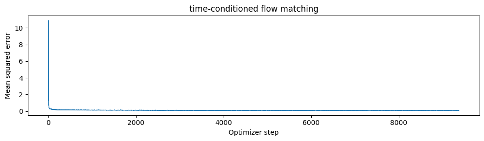
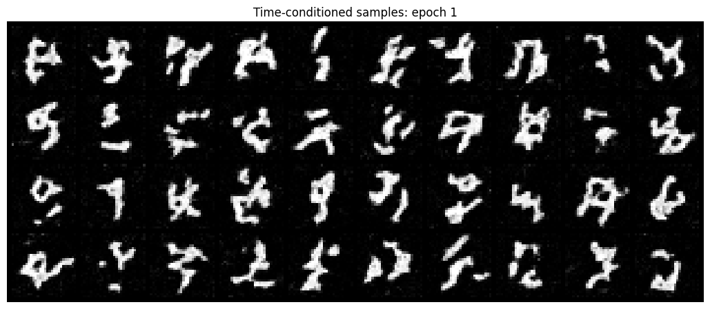
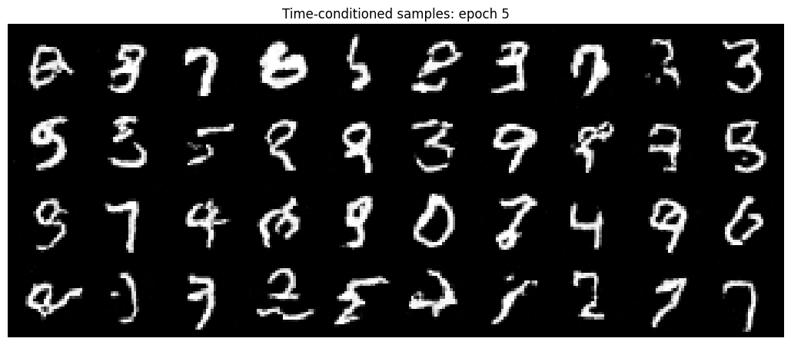
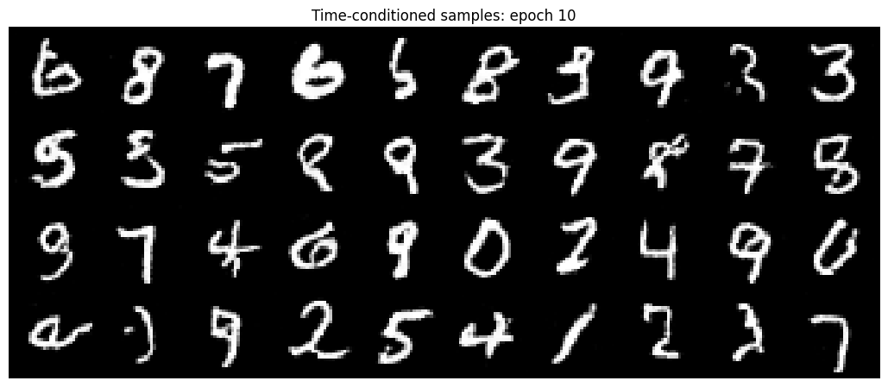
Choosing Which Digit to Generate
Adding a digit label lets me choose what to generate. Each label becomes a ten-entry one-hot vector and passes through two class-embedding blocks. About 10% of training examples have that vector zeroed out, so the model learns to work without a label too.
At those same decoder locations, each class weight multiplies its feature channel, then the time embedding is added. Sampling combines predictions with and without the label. Part B's CFG formula starts from the unconditional velocity:
Training: fresh hidden-dimension-64 UNet · batch size 64 · ten epochs · Adam initial learning rate 0.01 · same exponential scheduler · class dropout probability 0.1.
Sampling: four instances of every digit · 300 Euler steps · guidance scale 5 · seed 180.
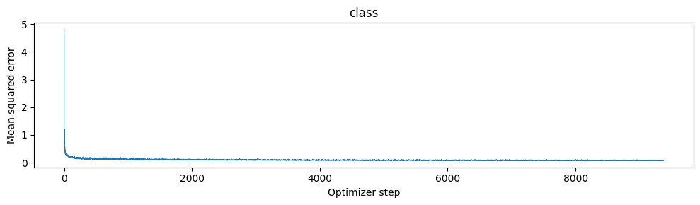
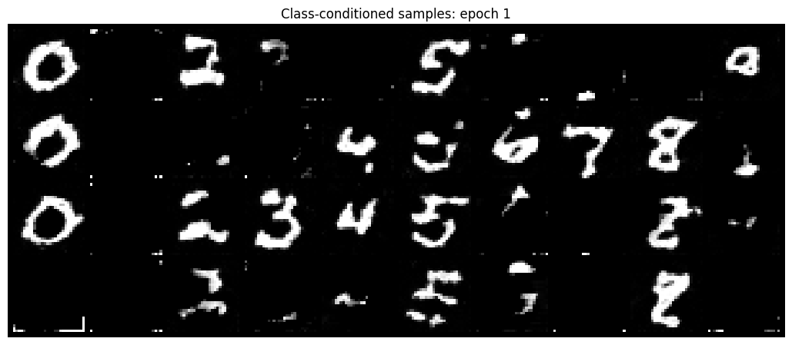
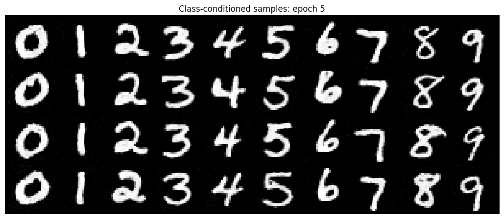
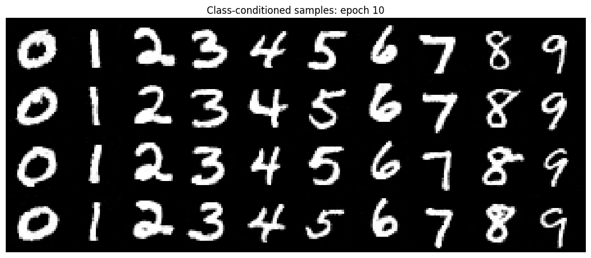
Removing the learning-rate scheduler
For the no-scheduler test, everything stays the same except the learning-rate schedule. A fresh model trains for ten epochs at a constant 0.001, lowered from the original starting rate of 0.01. The idea is to keep updates small from the start.
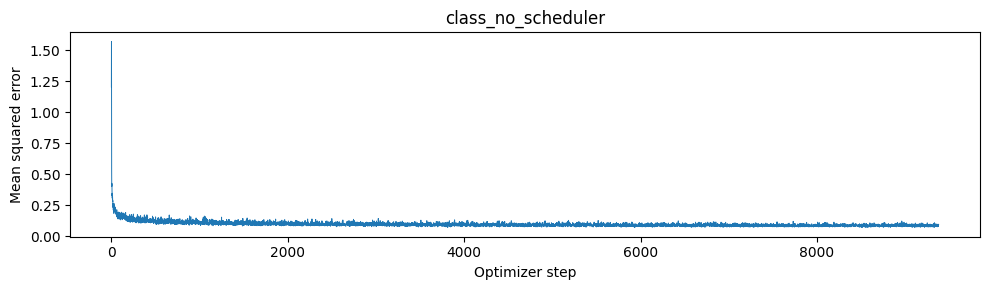
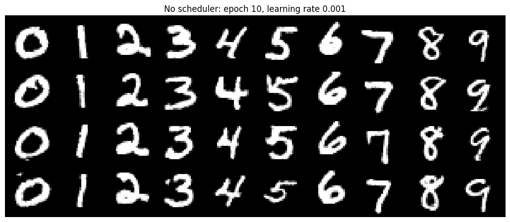
All ten digits are still readable. Some strokes change thickness or shape, but the final grid looks roughly as good as the scheduled run to me. So the lower constant rate worked well here, at least by visual inspection; I didn't measure sample quality or diversity.
What I Learned
The parrot photo is one I took in Florida, so turning it into a glass sculpture was pretty fun! The bigger lesson was that convincing detail doesn't guarantee an accurate reconstruction. The pure-noise digits were another reminder to check the images: their loss fell, but they all looked like the same blurry blob.
Assignment references: Part A: Exploring Flow Models and Part B: Flow Matching from Scratch.